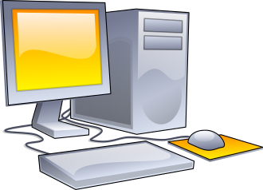
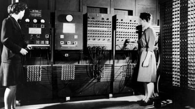
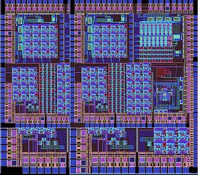
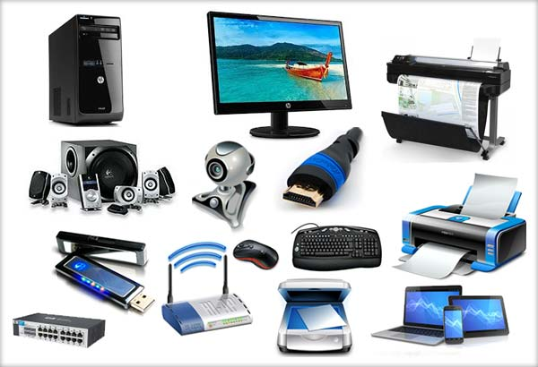

Calculatorul:
În zilele noastre calculatoarele se construiesc în mare majoritate din componente
electronice și de aceea cuvântul „calculator” înseamnă de obicei un calculator electronic.
Calculatoarele care sunt programabile liber și pot, cel puțin în principiu, prelucra orice
fel de date sau informații se numesc universale. Calculatoarele actuale nu sunt doar mașini
de prelucrat informații, ci și dispozitive care facilitează comunicația între doi sau mai mulți
utilizatori, de exemplu sub formă de numere, text, imagini, sunet sau video sau chiar toate
deodată.

Știința prelucrării informațiilor cu ajutorul calculatoarelor se numește informatică.
Tehnologia necesară pentru folosirea lor poartă numele Tehnologia Informației, prescurtat
TI sau IT. În principiu, orice calculator care deține un anumit set minimum de funcții poate
îndeplini funcțiile oricărui alt asemenea calculator, indiferent că este vorba de un PDA sau de
un supercalculator. Această compatibilitate a condus la folosirea calculatoarelor cu arhitecturi
asemănătoare pentru cele mai diverse activități, de la calculul salarizării personalului unei
companii până la controlul roboților industriali sau medicali.
Functionare:
Calculatoarele clasice pe care le folosim în prezent efectuează operații logice folosind biți -
un flux de impulsuri electrice sau optice reprezentând formule binare formate din 1 sau 0. Un
calculator obișnuit stochează și procesează informația cu ajutorul tranzistorilor: când tranzistorul
permite trecerea curentului electric, apare un semnal de tip 0, iar, dacă tranzistorul nu permite
trecerea curentului electric, un semnal de tip 1. În orice sarcină a computerului, procesul este
același: un algoritm manipulează o serie de biți, unde fiecare bit este fie 0, fie 1, din care
rezultatul este un nou șir de biți.
Un calculator funtioneaza astfel:

Istoric:
Cel mai vechi mecanism cunoscut care se pare că putea funcționa ca o
mașină de calculat se consideră a fi mecanismul de la Antikythera,
datând din anul 87 î.e.n. și folosit aparent pentru calcularea mișcărilor
planetelor. Tehnologia care a stat la baza acestui mecanism nu este
cunoscută. Odată cu revigorarea matematicii și a științelor în timpul
Renașterii europene au apărut o succesiune de dispozitive mecanice de
calculat, bazate pe principiul ceasornicului, de exemplu mașina inventată
de Blaise Pascal. Tehnica de stocare și citire a datelor pe cartele perforate
a apărut în secolul al XIX-lea. În același secol, Charles Babbage este cel
dintâi care proiectează o mașină de calcul complet programabilă, însă din
păcate proiectul său nu va prinde roade, în parte din cauza limitărilor
tehnologice ale vremii. În prima jumătate a secolului al XX-lea, nevoile de
calcul ale comunității științifice erau satisfăcute de calculatoare analoage,
foarte specializate și din ce în ce mai sofisticate. Perfecționarea
electronicii digitale (datorată lui Claude Shannon în anii 1930) a condus la
abandonarea calculatoarelor analogice în favoarea celor digitale (numerice),
care modelează problemele în numere (biți) în loc de semnale electrice sau
mecanice. Este greu de precizat care a fost primul calculator digital;
realizări notabile au fost: calculatorul Atanasoff-Berry, mașinile Z ale
germanului Konrad Zuse - de exemplu calculatorul electromecanic Z3, care,
deși foarte nepractic, a fost probabil cel dintâi calculator universal, apoi
calculatorul ENIAC cu o arhitectură relativ inflexibilă care cerea
modificări ale cablajelor la fiecare reprogramare, precum și calculatorul
secret britanic Colossus, construit pe bază de lămpi și programabil
electronic. Echipa de proiectare a ENIAC-ului, recunoscând neajunsurile
acestuia, a elaborat o altă arhitectură, mult mai flexibilă, care a ajuns
cunoscută sub numele de arhitectura von Neumann sau „arhitectură cu program
memorat“. Aceasta stă la baza aproape tuturor mașinilor de calcul actuale.
Primul sistem construit pe arhitectura von Neumann a fost EDSAC. În anii 1960
lămpile (tuburile electronice) au fost înlocuite de tranzistori,
mult mai eficienți, mai mici, mai ieftini și mai fiabili, ceea ce a dus la
miniaturizarea și ieftinirea calculatoarelor. Din anii 1970, adoptarea
circuitelor integrate a coborât și mai mult prețul și dimensiunea
calculatoarelor, permițând printre altele și apariția calculatoarelor
personale de acum.
Primul calculator pentru uz general:

Circuite digitale:
Principiile de mai sus pot fi implementate cu o varietate de tehnologii - de exemplu mașina lui Babbage era alcătuită din componente mecanice. Însă singura asemenea tehnologie care s-a dovedit suficient de practică este cea a circuitelor digitale (numerice), circuite electronice care pot efectua operații din algebra booleană și aritmetica binară. Dar primele „circuite” digitale foloseau relee electromecanice pentru a reprezenta stările "0" (blocat) și "1" (conducție), aranjate în porți logice. Releele au fost repede înlocuite cu lămpi electronice - tuburi electronice cu vid, dispozitive 100% electronice, folosite până atunci în electronica analogă pentru proprietățile lor de amplificare, dar care au putut fi utilizate și drept comutatoare (elemente de bază în construcția calculatoarelor) de stare, 1→0 sau 0→1. Aranjând corect porți logice binare , se pot construi circuite care execută și funcții mai complexe, de exemplu sumatoare. Sumatorul electronic adună două numere folosind același procedeu învățat de copii la școală: se adună fiecare cifră corespondentă, iar „transportul” este transmis către cifrele din stânga. În consecință, reunind mai multe asemenea circuite, se pot obține o UAL și o unitate de control complete. CSIRAC, unul din primele calculatoare bazate pe arhitectura von Neumann și probabil cel mai mic asemenea calculator posibil, avea circa 2000 de lămpi - deci chiar și pentru sisteme minimale e nevoie de un număr considerabil de componente. Lămpile electronice erau caracterizate de câteva limitări severe în folosirea lor pentru construcția porților logice: erau scumpe, puțin fiabile, ocupau mult spațiu și consumau cantități mari de curent. Deși erau incredibil de rapide față de releele electromecanice, aveau și ele totuși o viteză de operare relativ limitată. Astfel că începând din anii 1960 lămpile au fost înlocuite cu tranzistori, dispozitive ce funcționau asemănător, însă erau mult mai mici, mai rapide, mai fiabile, mai puțin consumatoare de curent și mult mai ieftine. Din anii 1960-'70, tranzistorul a fost și el înlocuit cu circuitul integrat, care conținea mai mulți tranzistori, și firele de interconectare corespunzătoare, pe o singură plăcuță de siliciu. Din anii '70, UAL-urile combinate cu unități de control (UC) au fost produse unitar ca circuite integrate, numite microprocesoare, sau CPU (Central Processing Unit/unitate de procesare centrală). În timp, densitatea tranzistorilor din circuitele integrate a crescut incredibil, de la câteva zeci, în anii 70, până la peste 100 de milioane de tranzistoare pe circuit integrat, la procesoarele Intel și AMD din anul 2005.
Un circuit integrat vazut la microscop:

Memorare de date:
Lămpile electronice și tranzistorii pot fi folosite și pentru construirea de memorii - așa-numitele circuite flip-flop sau „basculante bistabile”, și chiar sunt folosite pentru mici circuite de memorie de mare viteză, numite „cu acces direct”. În puține cazuri, designul de calculatoare a folosit bistabile pentru grosul nevoilor de memorie, memorii de amploare. Primele calculatoare foloseau tuburi Williams - în esență proiectând puncte pe un ecran TV și citindu-le din nou mai târziu, sau linii de mercur, în care datele erau depozitate sub formă de unde sonore care parcurgeau tuburi cu mercur la viteză mică. Aceste metode destul de neproductive au fost înlocuite cu dispozitive de stocare în mediu purtător magnetic, de exemplu memoria cu miezuri magnetice de formă inelară, în care un curent electric era folosit pentru a induce un câmp magnetic remanent într-un material feros, care putea fi citit ulterior, după necesitate pentru a folosi datele. În cele din urmă a apărut memoria dynamic random access memory , DRAM. DRAM-ul este format din bănci (mulțimi grupate) de condensatori, componente electrice care pot reține o sarcină electrică pentru o anumită durată de timp. Scrierea informației într-o astfel de memorie se face prin încărcarea condensatorilor cu o anumită sarcină electrică, iar citirea prin determinarea sarcinii acestora.
Periferice de intrare/ieșire:
„I/E” („intrare-ieșire”), sau în engleză I/O (de la input/output), este
termenul general pentru acele dispozitive prin care un calculator primește
informații din lumea exterioară, inclusiv instrucțiuni despre ce să facă,
sau trimite înapoi (în afară) rezultatele calculelor sau operațiilor logice
pe care le-a efectuat. Rezultatele pot fi destinate ca informații oamenilor,
sau pot fi folosite în mod direct (nemijlocit) drept decizii în dirijarea
altor mașini; de exemplu în cazul unui robot industrial, cel mai important
dispozitiv de ieșire (dispozitiv E) al calculatorului (de robot) înglobat în
el creează comenzile detailate necesare pentru toate operațiile (mișcările)
mecanice ale robotului propriu-zis. Prima generație de calculatoare era echipată
cu o gamă de dispozitive I/E destul de limitată și cu viteză de execuție redusă;
de exemplu, pentru introducerea datelor de calcul și a instrucțiunilor de program
se folosea în principal un cititor de cartele perforate sau un dispozitiv asemănător,
iar pentru afișarea rezultatelor se folosea o imprimantă, de obicei un teleimprimator
modificat de tip „telex”.

De-a lungul timpului însă au apărut o imensă diversitate de
dispozitive I/E. Pentru calculatorul personal de azi, cele mai comune modalități de
introducere directă a datelor sunt tastaturile și mausurile, iar principalul mijloc
prin care calculatorul prezintă informații către utilizator sunt monitoarele, deși
imprimantele sau dispozitivele de generat sunet sunt folosite și ele în mod obișnuit.
Alte dispozitive sunt specializate pentru numai anumite tipuri de intrări sau ieșiri,
de exemplu aparatul foto digital și scanerul.
Două categorii principale de dispozitive sunt:
1. Dispozitivele secundare de stocare: dischetele, unitățile CD, DVD, discurile dure
și altele; capacitățile de stocare a datelor pot diferi foarte mult între ele.
2. Precum și dispozitivele pentru conectarea la rețele de calculatoare. Posibilitatea
de a interconecta calculatoarele pentru a transfera date și informații între ele a
deschis calea unei mulțimi de noi aplicații. Internetul, și aici în special World Wide
Web, permit miliardelor de calculatoare de pe glob să se lege unele cu altele pentru a
transfera între ele informații de toate tipurile.
Curiozitati despre un calculator:
1. Aparitie - Primul laptop din lume a aparut in anul 1976 si cantarea in total 22 kg. Inceputul erei electronice il reprezinta insa aparitia primului calculator electronic pentru uz general. Acesta a fost finalizat in anul 1946 si cantarea 30 de tone. Curios, daca stai sa te gandesti cat cantareste acum un calculator!
2. Motivul aparitiei - Motivul pentru care a aparut primul calculator din lume a fost nevoia armatei americane de a calcula tabele balistice in laboratorul de cercetari pe care il detinea. Proiectul si constructia sa au fost finantate tot de armata SUA
3. Calculatorul actual - Un calculator din zilele noastre are nevoie de trei lucruri pentru a functiona si acestea sunt componentele fizice sau partea de hardware, un sistem de operare si programe software, instalate in functie de nevoile fiecaruia. Monitorul, tastatura, mouse-ul sau imprimanta sunt considerate componente hardware. Ele mai sunt numite si componente periferice, datorita amplasarii lor la exterior.
4. Memoria calculatorului - Nu este la fel ca in cazul oamenilor, unde memoria se mai pierde din cand in cand. In cazul unui calculator, memoria este sustinuta de HardDisk-uri, CD Rom-uri, DVD Rom-uri sau SSD-uri. Ele stocheaza datele in memoria pe termen lung, de unde pot fi apelate ulterior. Microprocesorul este cel care lucreaza cu memoria, numita si RAM. Calculatoarele moderne se deosebesc prin capacitatea ridicata de memorare, care le permite sa fie mult mai rapide.
5. Creierul calculatorului - Cea mai importanta componenta pe care o are placa de baza este microprocesorul. Responsabilitatea pe care o are acesta este sa gandeasca pentru calculator, sau mai simplu spus, este creierul acestuia. In functie de modelul si viteza microprocesorului, un calculator poate sa opereze mai greu sau mai lent.